程序批量绘制 · 无image_gen调用 · 独立草图，未接入游戏
剩余12个场景的环境草图
共享家具、墙地、窗户与道具函数，按各场景安排布局。现有南京办公室继续复用。图片不含人物，人物使用已有素材与新设定图；可走区域、遮挡和交互仍需后续配置。没有照片依据的空间均为游戏演出设定。
全部PNG合计 32,826 B；每张384×216。小体积来自有限像素与规则色块，细节比南京原作简化，尚未达到正式替换标准。
合肥 · 大学宿舍
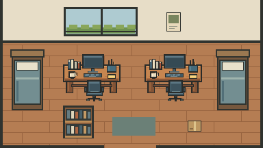
宿舍、游戏与求职前的自己；家具布局为演出设定。
3,191 B · 无人物、无交互接入
合肥 · 安风徳办公室
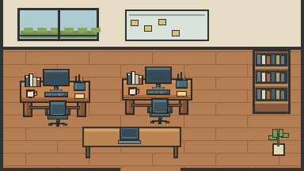
求职、技术习惯与两次加薪；不虚构老板原话。
3,207 B · 无人物、无交互接入
南京 · 深夜书桌
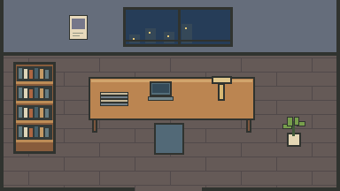
回家读技术书至凌晨两点；不把学习与故障强行建立因果。
2,344 B · 无人物、无交互接入
杭州 · 商品发布团队
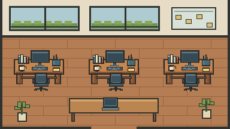
商品发布与SDK协作；屏幕仅示意，不伪造真实系统。
3,233 B · 无人物、无交互接入
杭州 · 双11值守
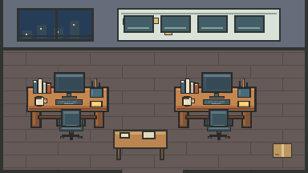
与TL共同排查；不编造超卖根因或真实日志。
3,047 B · 无人物、无交互接入
杭州 · 浙里办项目
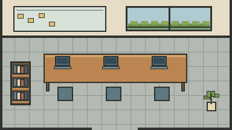
设计系统与低码协作；不冒充真实办公空间。
2,245 B · 无人物、无交互接入
春节 · 健康码支援
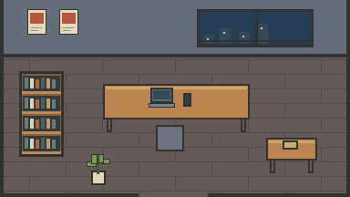
只表现临时抽调参与，不添加未确认的职责、地址与成果。
2,399 B · 无人物、无交互接入
菜鸟 · 驿站工作现场
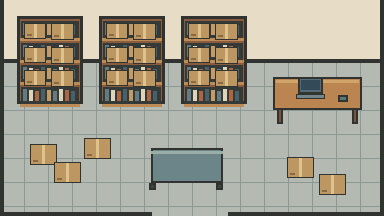
驿站包裹与扫码工作区；不绘制雇主标志或真实用户标签。
2,707 B · 无人物、无交互接入
双11 · 送货入楼
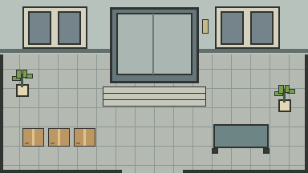
小区入口与楼道配送演出，不指定真实小区布局。
2,297 B · 无人物、无交互接入
字节 · 性能工作
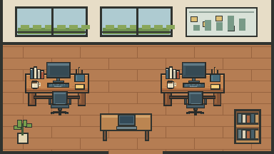
当前工作协作场景；不伪造内部看板或企业UI。
3,339 B · 无人物、无交互接入
现在 · AI与写作书桌
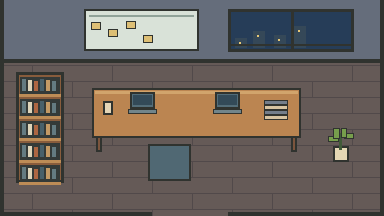
学习、工具、AgentToy与Blogflow；屏幕不生成假对话。
2,473 B · 无人物、无交互接入
南京现有基准（复用）
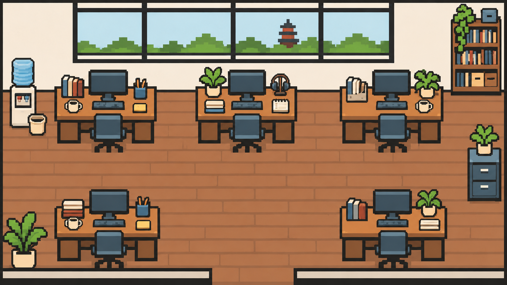
程序草图的材质与不规则细节仍有差距，不因场景数量齐全而放宽视觉验收。
绘图源码 · 文件与哈希记录 · 人物设定 · 南京游戏